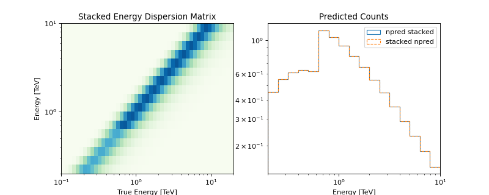
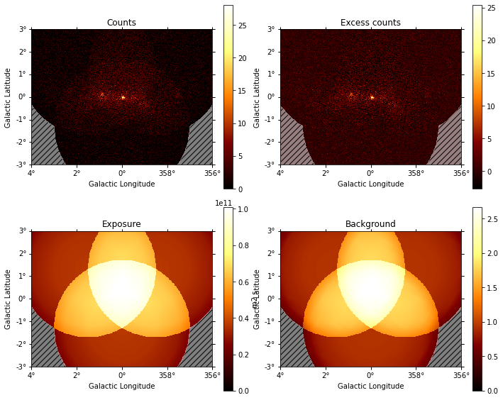
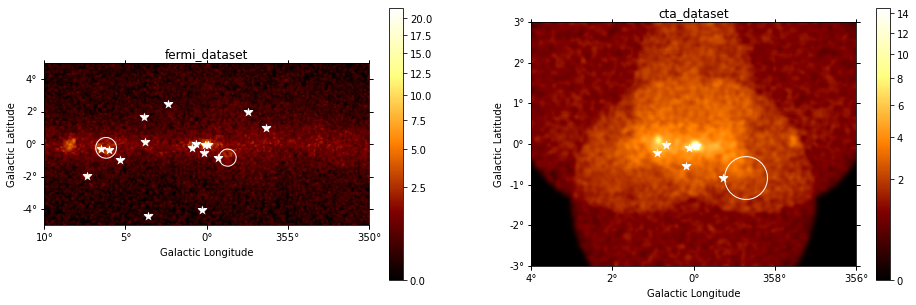
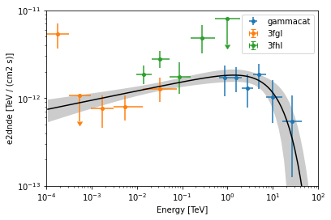
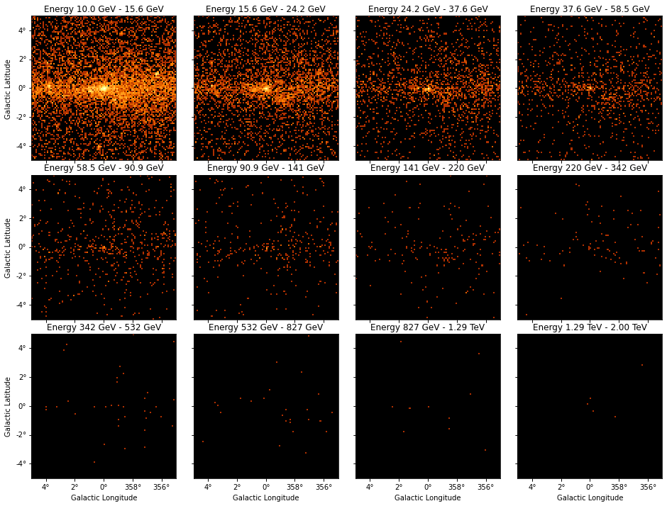
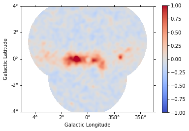

Datasets (DL4)#
Datasets#
The gammapy.datasets sub-package contains classes to handle reduced
gamma-ray data for modeling and fitting.
The Dataset class bundles reduced data, IRFs and model to perform
likelihood fitting and joint-likelihood fitting.
All datasets contain a Models container with one or more
SkyModel objects that represent additive emission
components.
To model and fit data in Gammapy, you have to create a
Datasets container object with one or multiple
Dataset objects.
Types of supported datasets#
Gammapy has built-in support to create and analyse the following datasets:
Dataset Type |
Data Type |
Reduced IRFs |
Geometry |
Additional Quantities |
Fit Statistic |
|---|---|---|---|---|---|
|
|
|
|
||
|
|
|
|
|
|
|
|
|
|
||
|
|
|
|
|
|
|
None |
None |
|
In addition to the above quantities, a dataset can optionally have a
meta_table serialised, which can contain relevant information about the observations
used to create the dataset.
In general, OnOff datasets should be used when the
background is estimated from real off counts,
rather than from a background model.
The FluxPointsDataset is used to fit pre-computed flux points
when no convolution with IRFs are needed.
The map datasets represent 3D cubes (WcsNDMap objects) with two
spatial and one energy axis. For 2D images the same map objects and map datasets
are used, an energy axis is present but only has one energy bin.
The spectrum datasets represent 1D spectra (RegionNDMap
objects) with an energy axis. There are no spatial axes or information, the 1D
spectra are obtained for a given on region.
Note that in Gammapy, 2D image analyses are done with 3D cubes with a single energy bin, e.g. for modeling and fitting.
To analyse multiple runs, you can either stack the datasets together, or perform a joint fit across multiple datasets.
Predicted counts#
The total number of predicted counts from a MapDataset are computed per bin like:
Where \(N_{Bkg}\) is the expected counts from the residual hadronic background model and \(N_{Src}\) the predicted counts from a given source model component. The predicted counts from the hadronic background are computed directly from the model in reconstructed energy and spatial coordinates, while the predicted counts from a source are obtained by forward folding with the instrument response:
Where \(F_{Src}\) is the integrated flux of the source model, \(\mathcal{E}\) the exposure, \(\mathrm{EDISP}\) the energy dispersion matrix and \(\mathrm{PSF}\) the PSF convolution kernel. The corresponding IRFs are extracted at the current position of the model component defined by \((l, b)\) and assumed to be constant across the size of the source. The detailed expressions to compute the predicted number of counts from a source and corresponding IRFs are given in IRF Theory.
Stacking Multiple Datasets#
Stacking datasets implies that the counts, background and reduced IRFs from all the runs are binned together to get one final dataset for which a likelihood is computed during the fit. Stacking is often useful to reduce the computation effort while analysing multiple runs.
The following table lists how the individual quantities are handled during stacking. Here, \(k\) denotes a bin in reconstructed energy, \(l\) a bin in true energy and \(j\) is the dataset number
Dataset attribute |
Behaviour |
Implementation |
|---|---|---|
|
Sum of individual livetimes |
\(\overline{t} = \sum_j t_j\) |
|
True if the pixel is included in the safe data range. |
\(\overline{\epsilon_k} = \sum_{j} \epsilon_{jk}\) |
|
Dropped |
|
|
Summed in the data range defined by |
\(\overline{\mathrm{counts}_k} = \sum_j \mathrm{counts}_{jk} \cdot \epsilon_{jk}\) |
|
Summed in the data range defined by |
\(\overline{\mathrm{bkg}_k} = \sum_j \mathrm{bkg}_{jk} \cdot \epsilon_{jk}\) |
|
Summed in the data range defined by |
\(\overline{\mathrm{exposure}_l} = \sum_{j} \mathrm{exposure}_{jl} \cdot \sum_k \epsilon_{jk}\) |
|
Exposure weighted average |
\(\overline{\mathrm{psf}_l} = \frac{\sum_{j} \mathrm{psf}_{jl} \cdot \mathrm{exposure}_{jl}} {\sum_{j} \mathrm{exposure}_{jl}}\) |
|
Exposure weighted average, with mask on reconstructed energy |
\(\overline{\mathrm{edisp}_{kl}} = \frac{\sum_{j}\mathrm{edisp}_{jkl} \cdot \epsilon_{jk} \cdot \mathrm{exposure}_{jl}} {\sum_{j} \mathrm{exposure}_{jl}}\) |
|
Union of individual |
For the model evaluation, an important factor that needs to be accounted for is
that the energy threshold changes between observations.
With the above implementation using a EDispersionMap,
the npred is conserved,
ie, the predicted number of counts on the stacked
dataset is the sum expected by stacking the npred of the individual runs,
The following plot illustrates the stacked energy dispersion kernel and summed predicted counts for individual as well as stacked spectral datasets:

Note
A stacked analysis is reasonable only when adding runs taken by the same instrument.
Stacking happens in-place, ie,
dataset1.stack(dataset2)will overwritedataset1To properly handle masks, it is necessary to stack onto an empty dataset.
Stacking only works for maps with equivalent geometry. Two geometries are called equivalent if one is exactly the same as or can be obtained from a cutout of the other.
Joint Analysis#
An alternative to stacking datasets is a joint fit across all the datasets. For a definition, see Glossary.
The total fit statistic of datasets is the sum of the fit statistic of each dataset. Note that this is not equal to the stacked fit statistic.
A joint fit usually allows a better modeling of the background because the background model parameters can be fit for each dataset simultaneously with the source models. However, a joint fit is, performance wise, very computationally intensive. The fit convergence time increases non-linearly with the number of datasets to be fit. Moreover, depending upon the number of parameters in the background model, even fit convergence might be an issue for a large number of datasets.
To strike a balance, what might be a practical solution for analysis of many runs is to stack runs taken under similar conditions and then do a joint fit on the stacked datasets.
Using gammapy.datasets#
Gammapy tutorial notebooks that show how to use this package:



Sky maps#
gammapy.maps contains classes for representing pixelized data structures with
at least two spatial dimensions representing coordinates on a sphere (e.g. an
image in celestial coordinates). These classes support an arbitrary number of
non-spatial dimensions and can represent images (2D), cubes (3D), or hypercubes
(4+D). Two pixelization schemes are supported:
WCS : Projection onto a 2D cartesian grid following the conventions of the World Coordinate System (WCS). Pixels are square in projected coordinates and as such are not equal area in spherical coordinates.
HEALPix : Hierarchical Equal Area Iso Latitude pixelation of the sphere. Pixels are equal area but have irregular shapes.
gammapy.maps is organized around two data structures: geometry classes
inheriting from Geom and map classes inheriting from Map. A geometry
defines the map boundaries, pixelization scheme, and provides methods for
converting to/from map and pixel coordinates. A map owns a Geom instance
as well as a data array containing map values. Where possible it is recommended
to use the abstract Map interface for accessing or updating the contents of a
map as this allows algorithms to be used interchangeably with different map
representations. The following reviews methods of the abstract map interface.
Documentation specific to WCS- and HEALPix-based maps is provided in HEALPix-based maps.
Documentation specific to region-based maps is provided in RegionGeom and RegionNDMap.
Getting started with maps#
All map objects have an abstract interface provided through the methods of the
Map. These methods can be used for accessing and manipulating the contents of
a map without reference to the underlying data representation (e.g. whether a
map uses WCS or HEALPix pixelization). For applications which do depend on the
specific representation one can also work directly with the classes derived from
Map. In the following we review some of the basic methods for working with
map objects, more details are given in the maps tutorial.
Differential and integral maps#
gammapy.maps supports both differential and integral maps, representing
differential values at specific coordinates, or integral values within bins.
This is achieved by specifying the node_type of a MapAxis. Quantities
defined at bin centers should have a node_type of “center”, and quantities
integrated in bins should have node_type of edges. Interpolation is defined
only for differential quantities.
For the specific case of the energy axis, conventionally, true energies are have node_type “center” (usually used for IRFs and exposure) whereas the reconstructed energy axis has node_type “edges” (usually used for counts and background). Model evaluations are first computed on differential bins, and then multiplied by the bin volumes to finally return integrated maps, so the output predicted counts maps are integral with node_type “edges”.
Accessor methods#
All map objects have a set of accessor methods provided through the abstract
Map class. These methods can be used to access or update the contents of the
map irrespective of its underlying representation. Four types of accessor
methods are provided:
get: Return the value of the map at the pixel containing the given coordinate (get_by_idx,get_by_pix,get_by_coord).interp: Interpolate or extrapolate the value of the map at an arbitrary coordinate.set: Set the value of the map at the pixel containing the given coordinate (set_by_idx,set_by_pix,set_by_coord).fill: Increment the value of the map at the pixel containing the given coordinate with a unit weight or the value in the optionalweightsargument (fill_by_idx,fill_by_pix,fill_by_coord).
Accessor methods accept as their first argument a coordinate tuple containing
scalars, lists, or numpy arrays with one tuple element for each dimension of the
map. coord methods optionally support a dict or MapCoord argument.
When using tuple input the first two elements in the tuple should be longitude and latitude followed by one element for each non-spatial dimension. Map coordinates can be expressed in one of three coordinate systems:
idx: Pixel indices. These are explicit (integer) pixel indices into the map.pix: Coordinates in pixel space. Pixel coordinates are continuous defined on the interval [0,N-1] where N is the number of pixels along a given map dimension with pixel centers at integer values. For methods that reference a discrete pixel, pixel coordinates will be rounded to the nearest pixel index and passed to the correspondingidxmethod.coord: The true map coordinates including angles on the sky (longitude and latitude). This coordinate system supports three coordinate representations:tuple,dict, andMapCoord. The tuple representation should contain longitude and latitude in degrees followed by one coordinate array for each non-spatial dimension.
The coordinate system accepted by a given accessor method can be inferred from
the suffix of the method name (e.g. get_by_idx). The following
demonstrates how one can access the same pixels of a WCS map using each of the
three coordinate systems:
from gammapy.maps import Map
m = Map.create(binsz=0.1, map_type='wcs', width=10.0)
vals = m.get_by_idx( ([49,50],[49,50]) )
vals = m.get_by_pix( ([49.0,50.0],[49.0,50.0]) )
vals = m.get_by_coord( ([-0.05,-0.05],[0.05,0.05]) )
Coordinate arguments obey normal numpy broadcasting rules. The coordinate tuple may contain any combination of scalars, lists or numpy arrays as long as they have compatible shapes. For instance a combination of scalar and vector arguments can be used to perform an operation along a slice of the map at a fixed value along that dimension. Multi-dimensional arguments can be use to broadcast a given operation across a grid of coordinate values.
import numpy as np
from gammapy.maps import Map
m = Map.create(binsz=0.1, map_type='wcs', width=10.0)
coords = np.linspace(-4.0, 4.0, 9)
# Equivalent calls for accessing value at pixel (49,49)
vals = m.get_by_idx( (49,49) )
vals = m.get_by_idx( ([49],[49]) )
vals = m.get_by_idx( (np.array([49]), np.array([49])) )
# Retrieve map values along latitude at fixed longitude=0.0
vals = m.get_by_coord( (0.0, coords) )
# Retrieve map values on a 2D grid of latitude/longitude points
vals = m.get_by_coord( (coords[None,:], coords[:,None]) )
# Set map values along slice at longitude=0.0 to twice their existing value
m.set_by_coord((0.0, coords), 2.0*m.get_by_coord((0.0, coords)))
The set and fill methods can both be used to set pixel values. The
following demonstrates how one can set pixel values:
from gammapy.maps import Map
import numpy as np
m = Map.create(binsz=0.1, map_type='wcs', width=10.0)
m.set_by_coord(([-0.05, -0.05], [0.05, 0.05]), [0.5, 1.5])
m.fill_by_coord( ([-0.05, -0.05], [0.05, 0.05]), weights=np.array([0.5, 1.5]))
Interface with MapCoord and SkyCoord#
The coord accessor methods accept dict, MapCoord, and
SkyCoord arguments in addition to the standard tuple of
ndarray argument. When using a tuple argument a
SkyCoord can be used instead of longitude and latitude
arrays. The coordinate frame of the SkyCoord will be
transformed to match the coordinate system of the map.
import numpy as np
from astropy.coordinates import SkyCoord
from gammapy.maps import Map, MapCoord, MapAxis
lon = [0, 1]
lat = [1, 2]
energy = [100, 1000]
energy_axis = MapAxis.from_bounds(100, 1E5, 12, interp='log', name='energy')
skycoord = SkyCoord(lon, lat, unit='deg', frame='galactic')
m = Map.create(binsz=0.1, map_type='wcs', width=10.0,
frame="galactic", axes=[energy_axis])
m.set_by_coord((skycoord, energy), [0.5, 1.5])
m.get_by_coord((skycoord, energy))
A MapCoord or dict argument can be used to interact with a map object
without reference to the axis ordering of the map geometry:
coord = MapCoord.create(dict(lon=lon, lat=lat, energy=energy))
m.set_by_coord(coord, [0.5, 1.5])
m.get_by_coord(coord)
m.set_by_coord(dict(lon=lon, lat=lat, energy=energy), [0.5, 1.5])
m.get_by_coord(dict(lon=lon, lat=lat, energy=energy))
However when using the named axis interface the axis name string (e.g. as given
by MapAxis.name) must match the name given in the method argument. The two
spatial axes must always be named lon and lat.
MapCoord#
MapCoord is an N-dimensional coordinate object that stores both spatial and
non-spatial coordinates and is accepted by all coord methods. A MapCoord
can be created with or without explicitly named axes with MapCoord.create.
Axes of a MapCoord can be accessed by index, name, or attribute. A MapCoord
without explicit axis names can be created by calling MapCoord.create with a
tuple argument:
import numpy as np
from astropy.coordinates import SkyCoord
from gammapy.maps import MapCoord
lon = [0.0, 1.0]
lat = [1.0, 2.0]
energy = [100, 1000]
skycoord = SkyCoord(lon, lat, unit='deg', frame='galactic')
# Create a MapCoord from a tuple (no explicit axis names)
c = MapCoord.create((lon, lat, energy))
print(c[0], c['lon'], c.lon)
print(c[1], c['lat'], c.lat)
print(c[2], c['axis0'])
# Create a MapCoord from a tuple + SkyCoord (no explicit axis names)
c = MapCoord.create((skycoord, energy))
print(c[0], c['lon'], c.lon)
print(c[1], c['lat'], c.lat)
print(c[2], c['axis0'])
The first two elements of the tuple argument must contain longitude and
latitude. Non-spatial axes are assigned a default name axis{I} where
{I} is the index of the non-spatial dimension. MapCoord objects created
without named axes must have the same axis ordering as the map geometry.
A MapCoord with named axes can be created by calling MapCoord.create with a dict:
c = MapCoord.create(dict(lon=lon, lat=lat, energy=energy))
print(c[0], c['lon'], c.lon)
print(c[1], c['lat'], c.lat)
print(c[2], c['energy'])
c = MapCoord.create({'energy': energy, 'lon': lon, 'lat': lat})
print(c[0], c['energy'])
print(c[1], c['lon'], c.lon)
print(c[2], c['lat'], c.lat)
c = MapCoord.create(dict(skycoord=skycoord, energy=energy))
print(c[0], c['lon'], c.lon)
print(c[1], c['lat'], c.lat)
print(c[2], c['energy'])
Spatial axes must be named lon and lat. MapCoord objects created with
named axes do not need to have the same axis ordering as the map geometry.
However the name of the axis must match the name of the corresponding map
geometry axis.
Using gammapy.maps#
Gammapy tutorial notebooks that show examples using gammapy.maps:




{kind=link}
{kind=link}
More detailed documentation on the WCS and HPX classes in gammapy.maps can be
found in the following sub-pages: